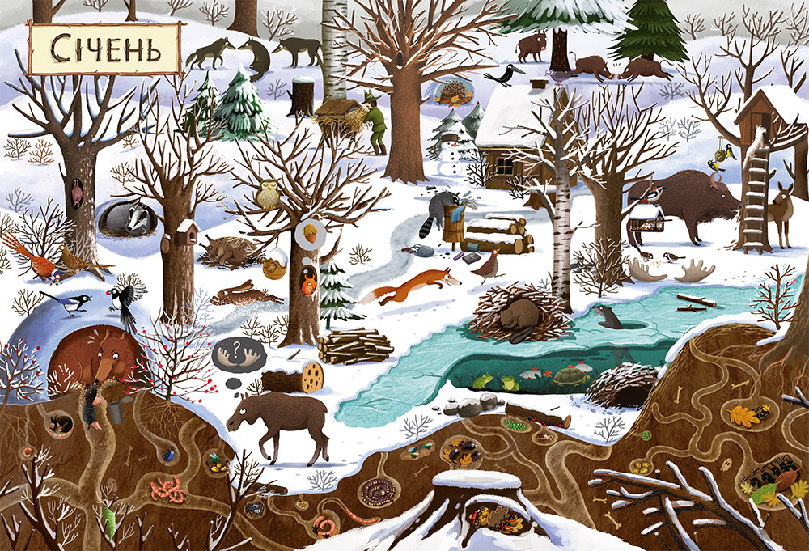

Я мужественно держалась целых два похода в книжный: смотрела, листала, держала в руках, отчаянно хотела ее. Но говорила себе, что у детей и так сейчас очень много новых книг и надо просто подождать какого-то особенного случая и подарить. Но однажды муж сам пошел на поиски книжек для себя, и вернулся с ней.
1. "Рік у лісі", Дзюбак Емілія. Это отличная книга для тех, кто любит красивые иллюстрации, но пока еще не умеет самостоятельно читать. Книга с качественными, яркими, насыщенными картинками про лес и его обитателей. Можно долго рассматривать сюжеты, доступно объясняя детям 3-4 лет, что происходит с природой на протяжении года. Формат книги мне кажется идеальным для детей такого возраста - она большая и с плотными страницами. А еще эта книга вдохновляет мою дочь садиться и пытаться нарисовать самых интересных для нее животных и птиц.

2. "Одного разу на Різдво", Надійка Гербіш.
Не смотря на то, что елку давно вынесли и сезон зимних праздников уже завершился,
эта книжка читается с удовольствием даже в начале весны.
Она про тепло, уют и любовь, и когда ее читаешь, сразу же хочется, как минимум,
испечь что-то вкусное и домашнее, хочется по-особенному переживать чувство большой и дружной семьи.
Хочется праздников, всего этого волшебства приготовлений и суеты…
Книга про тепло, доброту, про детство и про чудо, которым мы сами можем стать для кого-то.
3. ”Ведмідь не хоче спати”, Була Оксана.
Прекрасная небольшая книга формата “сказки перед сном” с простыми, но оочень интеречными иллюстрациями.
Мне всегда сложно устоять перед покупкой еще одной детской книжки, если в ней красивые и интересные картинки.
Эта книга - именно тот случай. История не длинная, читается легко и с юмором.
Особенно, если ваши дети похожи на моих в моменты, когда пора идти спать.
Автор рассказывает про таких специальных существ - туконей,
которые помогают животным в лесу готовиться к зимней спячке.
Каждый вечер чувствуем себя этими самыми туконями.
4."Зубр шукає гнїздо", Була Оксана.
Позже оказалось, что у книги "Ведмідь не хоче спати" есть начало истории.
И она про то, как Зубр решил нарушить скучный, привычный ход вещей и биологических ритмов
и впасть в зимнюю спячку. Тукони конечно были в шоке, ну а мы смеялись с этой истории всей семьей не один вечер. Обе истории и картинки к ним - просто любовь.
5."Що ховається у лісі?", Анна Бестард.
Тут, опять же, даже не знаю кому из нас двоих срочно и немедленно нужна была эта книга)
Мне нравятся книги для детей, которые задействуют не только ушки и воображение,
но и подстегивают детский азарт и любопытство, вовлекая в игру и поиск.
Когда детям не терпится выяснять, кто же там и правда прячется. Иллюстрации в книге довольно простые,
но сама задумка интересная. Правда по недосмотру мамы, дочь решила добавить в книгу красок,
наверное перепутав с очень похожими по формату раскрасками “Чарівний сад”. В общем, родителям на заметку)
{kind=link}